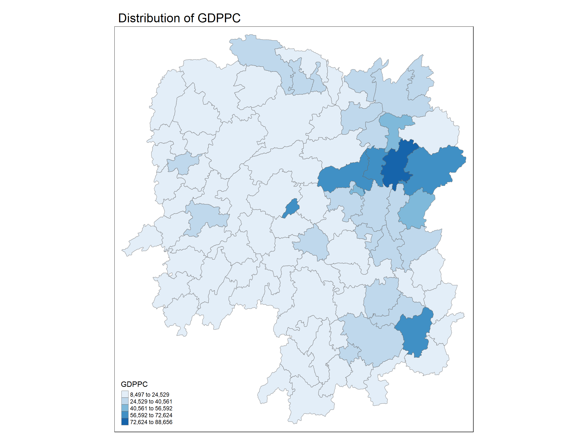
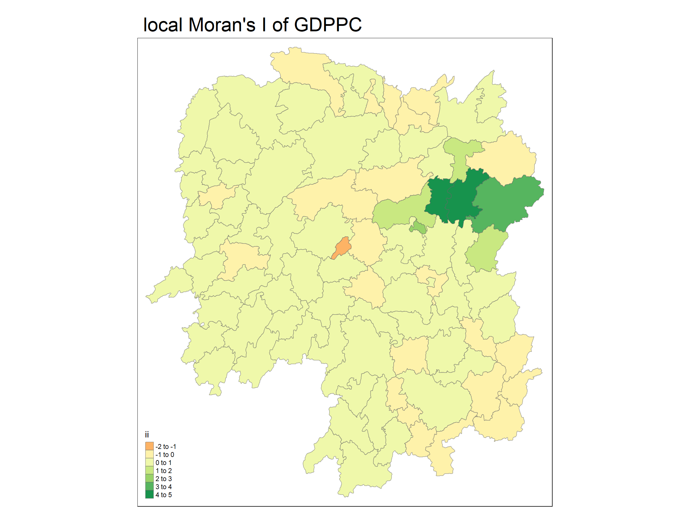
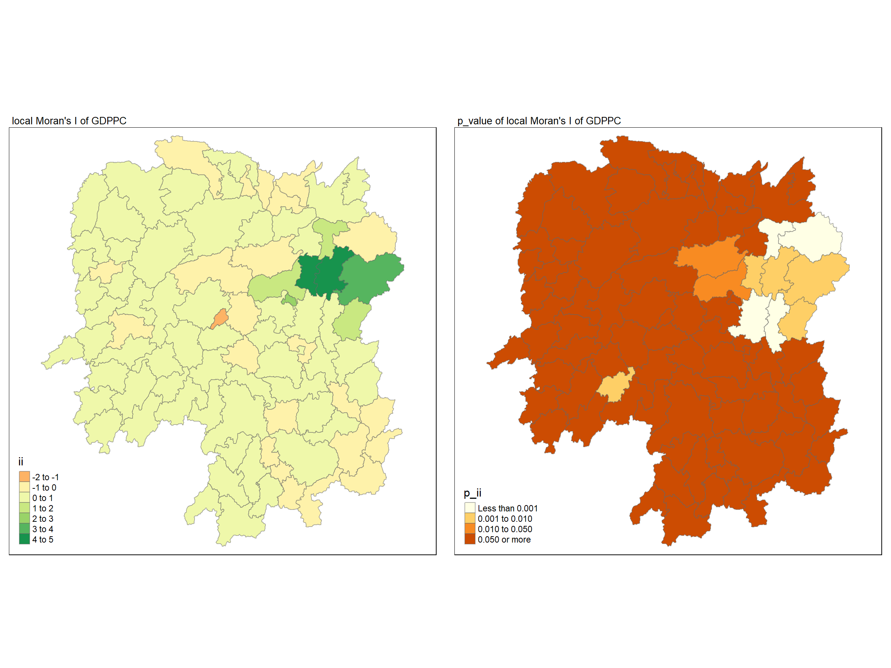
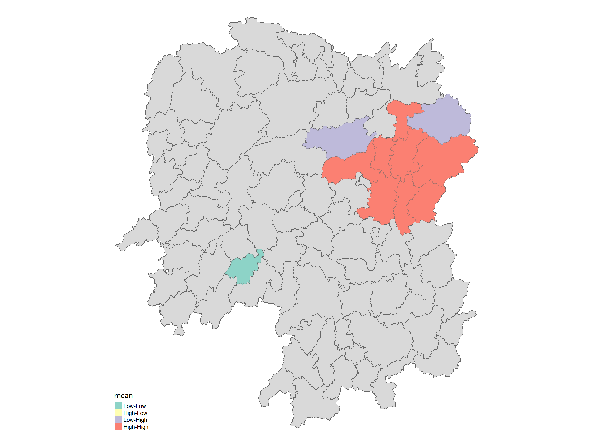
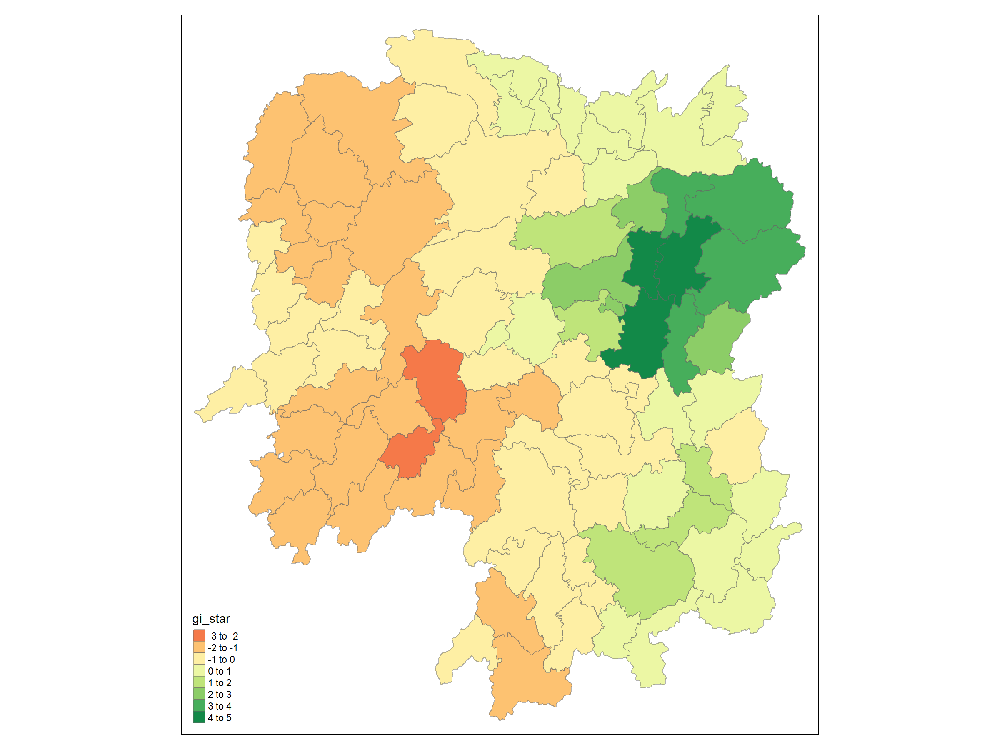
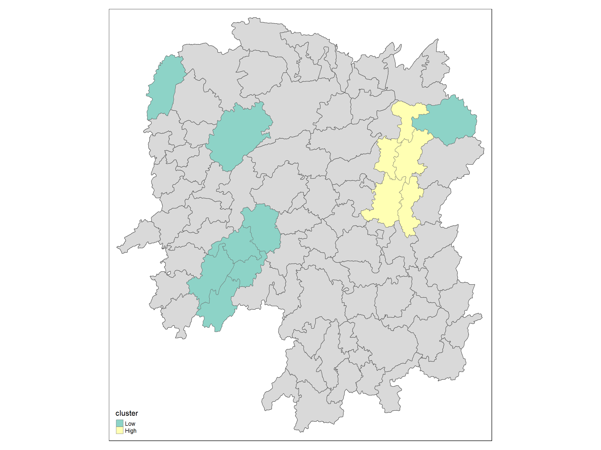

pacman::p_load(sf, tmap, sfdep, tidyverse)In-class Exercise 5
1. Getting started
The below 4 packages will be used
2. The data
hunan <- st_read(dsn = "data/geospatial",
layer = "Hunan")Reading layer `Hunan' from data source
`C:\Users\tien_\OneDrive\SMU\haductien1211\ISSS626-GAA\In-class_Ex\In-class_Ex05\data\geospatial'
using driver `ESRI Shapefile'
Simple feature collection with 88 features and 7 fields
Geometry type: POLYGON
Dimension: XY
Bounding box: xmin: 108.7831 ymin: 24.6342 xmax: 114.2544 ymax: 30.12812
Geodetic CRS: WGS 84hunan2012 <- read_csv("data/aspatial/Hunan_2012.csv")hunan_GDPPC <- left_join(hunan,hunan2012) %>%
select(1:4, 7, 15)3. Global meaures of spaitial association
Visualising
tm_shape(hunan_GDPPC) +
tm_fill("GDPPC",
n = 5,
palette="Blues",
style = "equal") +
tm_borders(alpha = 0.5) +
tm_layout(main.title = "Distribution of GDPPC")
3.1 Diriving Queen’s continuity weights: sfdep methods
- nb: a neighbor list objects as created by st_neighbors().
- style: default “W” for row stadarized weights
- allow_zero: if TRUE assisgns zero as lagged value to zone without neighbors
wm_q <- hunan_GDPPC %>%
mutate(nb = st_contiguity(geometry),
wt = st_weights(nb,
style = "W"),
.before = 1)3.2 Computing global Moran’s I
moranI <- global_moran(wm_q$GDPPC,
wm_q$nb,
wm_q$wt)
moranI$I
[1] 0.30075
$K
[1] 7.6406593.3 Performing Global Moran’I test
global_moran_test(wm_q$GDPPC,
wm_q$nb,
wm_q$wt)
Moran I test under randomisation
data: x
weights: listw
Moran I statistic standard deviate = 4.7351, p-value = 1.095e-06
alternative hypothesis: greater
sample estimates:
Moran I statistic Expectation Variance
0.300749970 -0.011494253 0.004348351
Tip
Since p-value < 0.05 based on the above result, we could reject the null hypothesis
3.4 Performing Global Moran’s I permutation test
set.seed(1234)global_moran_perm(wm_q$GDPPC,
wm_q$nb,
wm_q$wt,
nsim = 99)
Monte-Carlo simulation of Moran I
data: x
weights: listw
number of simulations + 1: 100
statistic = 0.30075, observed rank = 100, p-value < 2.2e-16
alternative hypothesis: two.sided3.5 Computing local Moran’s I
We will learn to calculate local Moran’s I using local_moran()
lisa <- wm_q %>%
mutate(local_moran = local_moran(GDPPC,
nb,
wt,
nsim = 99),
.before = 1) %>%
unnest(local_moran)head(lisa)Simple feature collection with 6 features and 20 fields
Geometry type: POLYGON
Dimension: XY
Bounding box: xmin: 110.4922 ymin: 28.61762 xmax: 112.3013 ymax: 30.12812
Geodetic CRS: WGS 84
# A tibble: 6 × 21
ii eii var_ii z_ii p_ii p_ii_sim p_folded_sim skewness
<dbl> <dbl> <dbl> <dbl> <dbl> <dbl> <dbl> <dbl>
1 -0.00147 0.00177 0.000418 -0.158 0.874 0.82 0.41 -0.812
2 0.0259 0.00641 0.0105 0.190 0.849 0.96 0.48 -1.09
3 -0.0120 -0.0374 0.102 0.0796 0.937 0.76 0.38 0.824
4 0.00102 -0.0000349 0.00000437 0.506 0.613 0.64 0.32 1.04
5 0.0148 -0.00340 0.00165 0.449 0.654 0.5 0.25 1.64
6 -0.0388 -0.00339 0.00545 -0.480 0.631 0.82 0.41 0.614
# ℹ 13 more variables: kurtosis <dbl>, mean <fct>, median <fct>, pysal <fct>,
# nb <nb>, wt <list>, NAME_2 <chr>, ID_3 <int>, NAME_3 <chr>,
# ENGTYPE_3 <chr>, County <chr>, GDPPC <dbl>, geometry <POLYGON [°]>3.6 Visualizing local Moran’s I
tmap_mode('plot')
tm_shape(lisa) +
tm_fill('ii') +
tm_borders(alpha = 0.5) +
tm_view(set.zoom.limits = c(6,8)) +
tm_layout(main.title = "local Moran's I of GDPPC",
main.title.size = 2)
3.7 Visualising local Moran’s I and p-value
map1 <- tm_shape(lisa) +
tm_fill('ii') +
tm_borders(alpha = 0.5) +
tm_view(set.zoom.limits = c(6,8)) +
tm_layout(main.title = "local Moran's I of GDPPC",
main.title.size = 0.8)
map2 <- tm_shape(lisa) +
tm_fill('p_ii',
breaks=c(-Inf, 0.001, 0.01, 0.05, Inf)) +
tm_borders(alpha = 0.5) +
tm_layout(main.title = "p_value of local Moran's I of GDPPC",
main.title.size = 0.8)
tmap_arrange(map1, map2, asp=1, ncol=2)
3.8 Visualising LISA map
lisa_sig <-lisa %>%
filter(p_ii < 0.05)
tmap_mode('plot')
tm_shape(lisa) +
tm_polygons() +
tm_borders(alpha = 0.5) +
tm_shape(lisa_sig) +
tm_fill("mean") +
tm_borders(alpha = 0.4)
3.9 Computing local Gi* Statistics
wm_idw <- hunan_GDPPC %>%
mutate(nb = st_contiguity(geometry),
wt = st_inverse_distance(nb,
geometry,
scale = 1,
alpha = 1),
.before = 1)Now we compute local Gi* by using the code chunk below
HCSA <- wm_idw %>%
mutate(local_Gi = local_gstar_perm(GDPPC,
nb,
wt,
nsim = 99),
.before = 1) %>%
unnest(local_Gi)
HCSASimple feature collection with 88 features and 18 fields
Geometry type: POLYGON
Dimension: XY
Bounding box: xmin: 108.7831 ymin: 24.6342 xmax: 114.2544 ymax: 30.12812
Geodetic CRS: WGS 84
# A tibble: 88 × 19
gi_star cluster e_gi var_gi std_dev p_value p_sim p_folded_sim skewness
<dbl> <fct> <dbl> <dbl> <dbl> <dbl> <dbl> <dbl> <dbl>
1 0.0416 Low 0.0114 0.00000641 0.0493 9.61e-1 0.7 0.35 0.875
2 -0.333 Low 0.0106 0.00000384 -0.0941 9.25e-1 1 0.5 0.661
3 0.281 High 0.0126 0.00000751 -0.151 8.80e-1 0.9 0.45 0.640
4 0.411 High 0.0118 0.00000922 0.264 7.92e-1 0.6 0.3 0.853
5 0.387 High 0.0115 0.00000956 0.339 7.34e-1 0.62 0.31 1.07
6 -0.368 High 0.0118 0.00000591 -0.583 5.60e-1 0.72 0.36 0.594
7 3.56 High 0.0151 0.00000731 2.61 9.01e-3 0.06 0.03 1.09
8 2.52 High 0.0136 0.00000614 1.49 1.35e-1 0.2 0.1 1.12
9 4.56 High 0.0144 0.00000584 3.53 4.17e-4 0.04 0.02 1.23
10 1.16 Low 0.0104 0.00000370 1.82 6.86e-2 0.12 0.06 0.416
# ℹ 78 more rows
# ℹ 10 more variables: kurtosis <dbl>, nb <nb>, wt <list>, NAME_2 <chr>,
# ID_3 <int>, NAME_3 <chr>, ENGTYPE_3 <chr>, County <chr>, GDPPC <dbl>,
# geometry <POLYGON [°]>3.10 Visualising Gi*
tmap_mode('plot')
tm_shape(HCSA) +
tm_fill("gi_star") +
tm_borders(alpha = 0.5)
HCSA_sig <-HCSA %>%
filter(p_sim < 0.05)
tmap_mode('plot')
tm_shape(HCSA) +
tm_polygons() +
tm_borders(alpha = 0.5) +
tm_shape(HCSA_sig) +
tm_fill("cluster") +
tm_borders(alpha = 0.5)